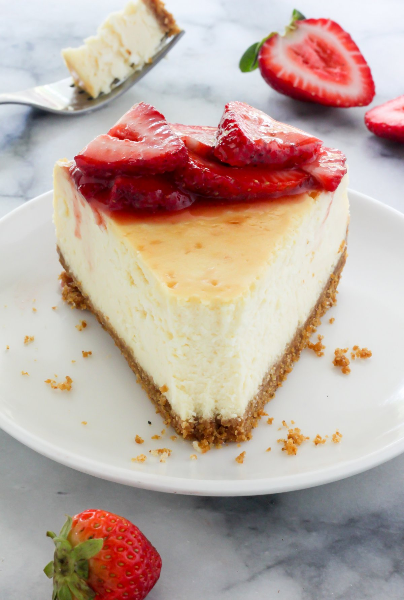

New York-Style Cheesecake

What Is New York-Style Cheesecake?
New York-style cheesecake is larger and richer than traditional cheesecake, thanks to the additions of cream cheese and more egg yolks. Some recipes, like this one, feature sour cream to make the dessert even more decadent.
Ingredients
- For the crust: graham cracker crumbs and melted butter
- For the filling: sour cream, all-purpose flour, vanilla extract, cream cheese, white sugar, milk, eggs, lemon zest, and orange zest
Steps
- Make the crust and press it into a prepared springform pan.
- Make the filling and pour it over the crust.
- Bake until the edges are puffed and the center is slightly jiggly.
- Let the cheesecake cool in the oven.